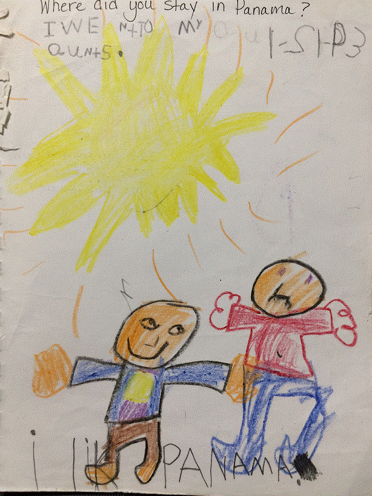

Christmas in Panama
Maria: I lik Panama
Miss Brock: Where did you stay in Panama?
Maria: Iwe ntTo My aunts.
Jumping on the Bed
Maria:CRRE N D ME JMTNARS
Miss Brock: Maria, Does Carrie's mom know that you and Carrie jumped on the mattress?
Maria:...
Pretend Camping Trip
Maria: I Ctane Tnt NCarrie Kmto Pla
Miss Brock: Maria, I like your new tent. I bet you will use it a lot over the summer. I will miss you. Love, Miss Brock